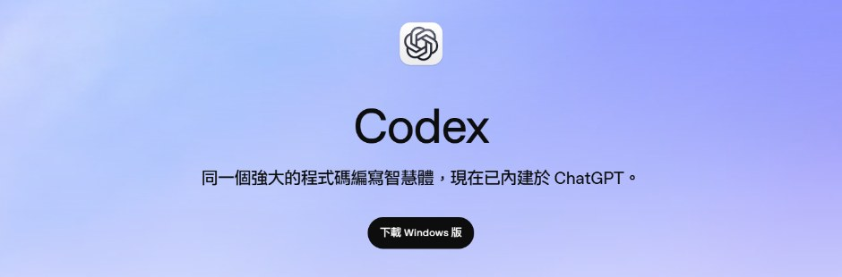
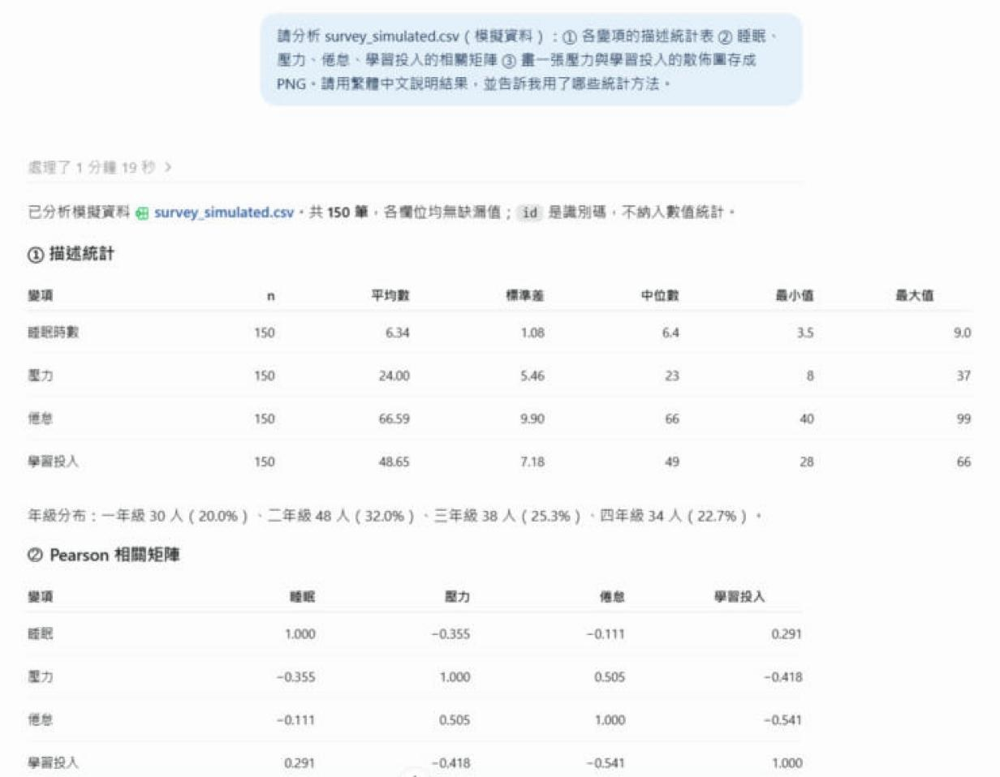
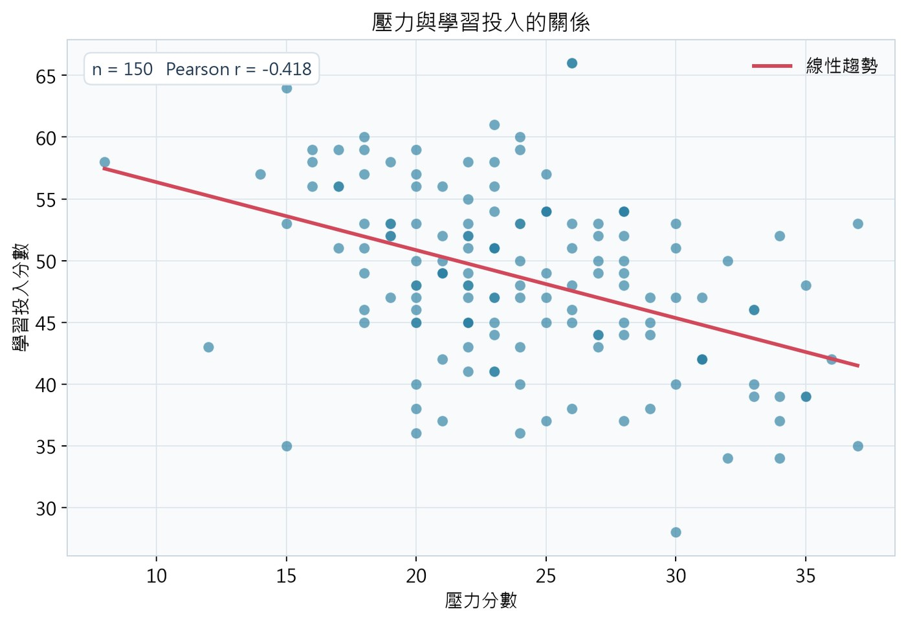

會寫程式、跑分析的 AI：從下載、登入，到第一次跑出統計結果
跟聊天型 AI 差在哪裡
下載、登入、指定資料夾
一段可以照抄的指令，加上它實際交出的成果
資料安全、統計把關、和 Claude 怎麼搭配
Codex 是 OpenAI 的程式 AI，用 ChatGPT 帳號登入；有桌面 App、網頁版、終端機版本。今天示範 Windows 桌面 App 的「工作」模式。
認明 OpenAI 官方網站（openai.com 或 chatgpt.com）
chatgpt.com/codex 頁面上的「下載 Windows 版」
可以直接用 Google 帳號。免費方案可試用，用量較少；各方案上限以官網為準

專案就是 Codex 的工作桌：指定一個資料夾，把要分析的檔案放進去
信任後，它可以讀取、編輯、執行這個資料夾裡的檔案
它可以不先問你，就修改檔案、執行指令
資料遺失、資訊外洩、檔案被改到非預期的樣子
先備份原始檔；點輸入框旁的權限按鈕，可查看或改用較保守的設定
讓它知道要讀哪一個檔案
一項一項，比一句話更不會漏
「用了哪些統計方法」是之後檢查的依據
避免把文字欄位當成數字
畫面上會顯示「正在執行指令」
150 筆資料、三項分析，一次完成


壓力愈高、學習投入愈低（r = −0.418）。它也自己註明：相關不代表因果，且這是模擬資料。
只放去識別化的資料；病人資料、未公開數據不進資料夾。依 IRB 與學校規定
統計方法由你決定，結果請指導老師或統計人員確認
它能修改檔案；原始檔先留一份，或要求它「不要修改原始檔」
可以。用中文描述要做的分析即可；要它「用白話解釋每一步」，就能看懂它做了什麼。
不建議直接放。方法與數字要自己核對、請統計人員確認，並依期刊規定揭露 AI 的使用。
資料會送到 OpenAI 的服務處理。只放去識別化資料，並先確認帳號的資料使用設定與學校規範。
免費方案可以試用，但用量較少；常用的話再考慮付費方案。價格與上限以官網為準。
上傳 PDF 整理成表格、比較研究、討論研究問題
清理資料、統計分析、畫圖，並留下可重跑的程式